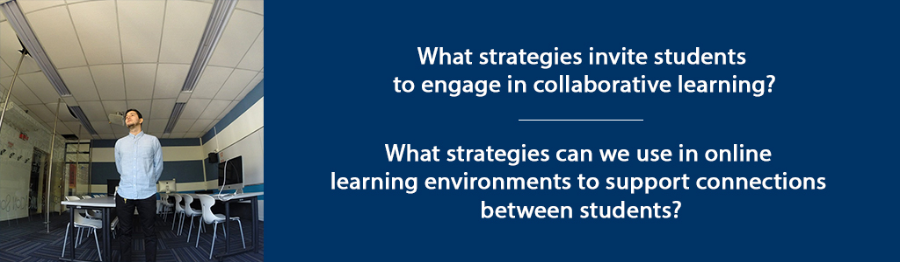
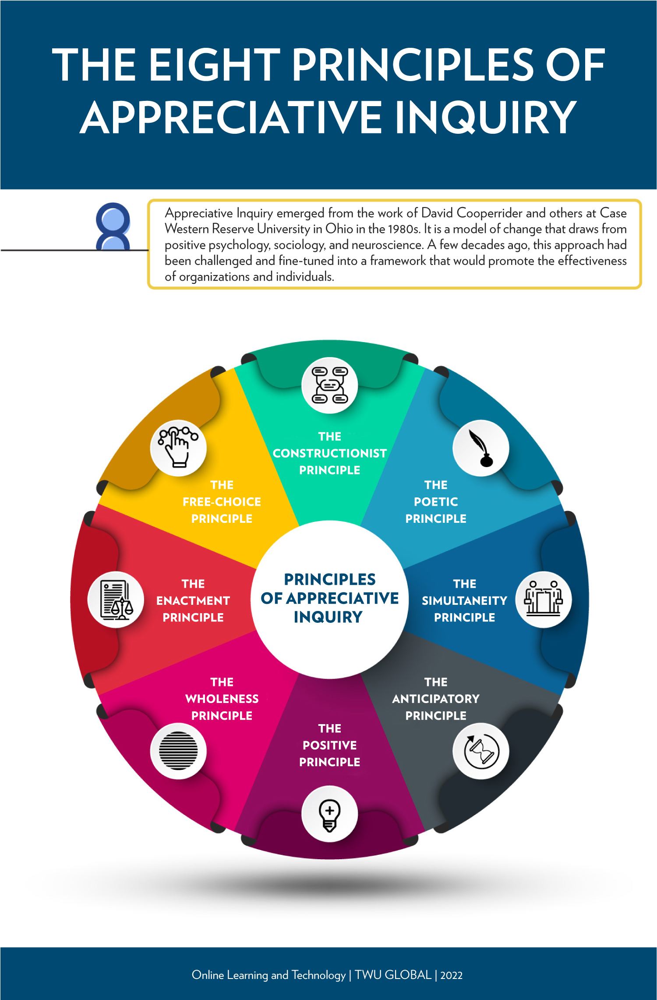

Overview
Building on our discussion of learning community models, in this unit we will explore specific strategies to engage students in collaborative learning, and support connections between learners.
Unit 5 focuses on two guiding questions:
- What strategies invite students to engage in collaborative learning?
- What strategies can we use in online learning environments to support connections between students?
Topics
- Creating Collaborative Learning in an Online Environment
- Supporting Connections Between Learners
Unit Learning Outcomes
When you have completed this unit you should be able to:
- Identify facilitator strategies that invite students to engage in collaborative learning.
- Identify strategies in online learning environments that support connections between students.
Learning Activities
Here is a checklist of learning activities you will benefit from in completing this unit. You may find it helpful in planning your work.
5.1 Creating Collaborative Learning in an Online Environment
In our role as a teacher or facilitator, we are engaged in leading learners through a transformational educational process. “Collaborative Inquiry” is a process through which we, as educators, engage in learning about the practice of teaching through collaborative inquiry and reflection (Donohoo & Velasco, 2016).
Athabasca University defines a Community of Inquiry as “a group of individuals who collaboratively engage in purposeful critical discourse and reflection to construct personal meaning and confirm mutual understanding” (Athabasca University, n.d.).
While Collaborative Inquiry is often used to describe a process used by professional learning communities to guide organizational change – or to describe Communities of Practice among educators – collaborative inquiry is also a practice that can be implemented within classrooms.
The fields of Collaborative Inquiry (Donohoo & Velasco, 2016) and Appreciative Inquiry (Whitney & Trosten-Bloom, 2010) are built on the premise that we must all collaborate together in a community of learners, and that by doing so, we can generate learning that goes beyond what we might learn on our own. It is a strengths-based approach to learning and change that has been described as “unifying moments when joy touches joy, strength touches strength, health touches health, inspiration combines with inspiration – and how to make the combinations happen more rapidly and frequently” (Cooperrider, D., as cited in Whitney & Trosten-Bloom, 2010, p. xiii).
Palmer’s (2017) “Community of Truth” that we explored in the last unit, incorporates the essence of collaborative learning, underscoring the importance of relationship within education. He writes, “What seems right for me, after many years of searching, is to sit in a circle with my students (or try to relate to the crowd in a lecture hall as if we were in a circle) and lead an inquiry into the great thing in our midst, But there are other ways to create community in the classroom, and some of them look nothing like the interactive encounter we normally associate with that word” (p. 139).
Whitney & Trosten-Bloom cast a compelling vision for collaborative environments where the act of engaging in appreciative inquiry can transform communities. They write: “Appreciative Inquiry transforms organizations into places that are free and alive, where people are eager and filled with positive power, and where the creativity of the whole never ceases to amaze, surprise, and innovate” (Whitney & Trosten-Bloom, 2010, p. xi). Learning communities, too, can become places that are free and alive, where all members of the community engage in challenging, authentic learning.
Appreciative Inquiry (Whitney & Trosten-Bloom, 2010) is built on eight principles, which can inform the way we support learners in an online learning context. These include:
- The Constructionist Principle
- The Simultaneity Principle
- The Poetic Principle
- The Anticipatory Principle
- The Positive Principle
- The Wholeness Principle
- The Enactment Principle
- The Free-Choice Principle
(Whitney & Trosten-Bloom, 2010, p. 52).

These principles can serve as a guide for facilitating online discussions, designing lessons, and providing formative feedback to learners. For example, the “Simultaneity Principle” is based on the premise that by its nature, asking questions not only leads to change, but the very act of engaging in inquiry is, in fact, the first step in change. According to this principle, “the moment we ask a question, we begin to create a change” (Whitney & Trosten-Bloom, 2010, p. 52).
Likewise, the “Free-Choice Principle” contends that “people perform better and are more committed when they have freedom to choose how and what they contribute” (Whitney & Trosten-Bloom, 2010, p. 52). Facilitating discussions that allow learners to engage in conversation (whether face-to-face or online), determine some aspects of their assignments, select topics, etc., can have a powerful influence on student engagement with learning.
5.1.1 Activity: Palmer Reading and Reflection
5.1.2 Activity: AI Read and Discussion
5.2 Supporting Connections Between Learners
Creating a positive, open, learning environment is a critical component for fostering authentic learning – a place where we can both belong to ourselves and to others.
Brown (2017) poses these questions:
Are we willing to show up and be seen when we can’t control the outcome? Are we willing to create courageous spaces so we can be fully seen? (p. 154)
Palmer (2017), offers five suggestions for ways in which we can prepare students for engagement in authentic communities – both in education, our places of work, and our communities.
- We must help our students debunk the myth that institutions process autonomous, even ultimate, power over our lives.
- We must validate the importance of our students’ emotions as well as their intellect.
- We must teach our students how to “mine” their emotions for knowledge.
- We must teach them how to cultivate community or the sake of both knowing and doing.
- We must teach – and model for – our students what is meant to be on the journey toward “an undivided life.” (p. 205).
In this course, we are exploring concepts of education that include our emotional experiences with learning, the importance of community, the nature of knowledge, and the foundational importance of the teacher’s authenticity. For some academics, the acknowledgement of the emotional experience of education can be challenging, according to Palmer, who argues that the feelings we have influence our learning.
Donohoo and Velasco (2016), in their work on Collaborative Inquiry, also underscore the importance of acknowledging the emotional experiences of student. “There is no doubt that learning is interrupted when negative emotions and attitudes surface, as such feelings hinder our ability to make sense of things” (Donohoo and Velasco, 2016, p. 36).
5.2.1 Activity: View and Reflect
5.2.2 Activity: Read and Strategize
Summary
In this unit, we have considered how we can create learning environments where students belong, the essential nature of creating connections between learnings, and specific strategies we can use to support collaborative learning.
Assessment
Please submit your assignments in the appropriate dropbox in Moodle. See the Assessment section for the Grading Criteria that explains how your assignments will be evaluated.